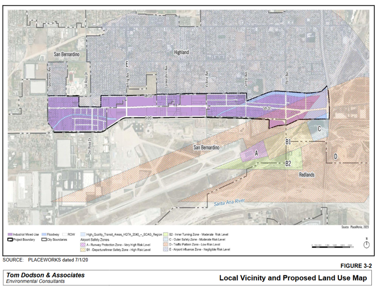

10 EJ - Warehouse Mapping Case Study - Warehouse CENTRAL
Today we will focus on the practice of creating polygons for use in a warehouse mapping visualization.
The Tracy Earth Project and Catholic Charities - Stockton Diocese Environmental Justice Program contacted us to help them build a warehouse mapping tool. This lesson will involve some praxis for this class to help build that tool.
First, we’ll use a praxis example from last semester to show you how to draw a polygon to overlay on a map (leaflet or ggplot). Then, you’ll each be drawing some polygons for the San Joaquin County area.
10.1 Airport Gateway Project
The Airport Gateway Specific Plan is a Program Environmental Impact Report (EIR) under CEQA (California Environmental Quality Act). Earthjustice asked for the Redford Conservancy and Radical Research LLC to write technical responses to the EIR back in March of this year.
The Airport Gateway Project is a development on about 678 acres of land just north of the San Bernardino Airport (i.e., the old Norton Air Force Base) between 3rd Street and 6th street between Tippecanoe Avenue and the I-210 freeway. Figure 10.1 shows the basic layout of the plan.

10.2 Cumulative Impacts
Today, I am going to ask you all to help with a cumulative impacts analysis (for the project. Under CEQA Section 15355, cumulative impacts are defined as ‘two or more individual effects, when considered together, are considerable or which compound or increase other environmental impacts…The cumulative impact from several projects is the change in the environment which results from the incremental impact of the project when added to other closely related past, present, and reasonably foreseeable future projects.’
A cumulative impacts analysis identifies the past, present, and probable future projects that should be included in the EIR.
The Warehouse CITY tool is designed to do exactly this. In Spring 2023, my class and helped to add dozens of planned warehouses to the existing warehouses map. This work helped us to add a layer of ’planned and approved warehouses to the tool allowing users to see what warehouses are likely to be built in the near future.
Within 3.1 miles (5 km) of the Airport Gateway project, the tool indicates that there are already 1740+ acres of warehouses. Using the default warehouse floor-area-ratio assumption of 0.65, and a truck trip generation rate of 0.67 trucks per 1000 square feet of warehouses, this results in an estimate of over 30,000 truck trips daily from this region. ?fig-AGarea shows the output. You can alter the circle size or move the starting point and see how sensitive the estimate is to the default assumptions. Also, you can zoom in with aerial imagery and see that a few warehouses aren’t identified in this analysis.
10.3 Visualization - Drawing a Polygon
Note, this is a highly manual approach. There are almost certainly machine-learning ways to do this systematically, but I am not an image processing expert. If any of you have desire to do more, I can point you to some resources for this.
10.3.1 Load libraries
10.3.2 Manually Identify the Polygon Vertices.
Open Google Maps or an equivalent mapping tool with satellite imagery and an ability to click on a location and retrieve a decimal degree location.
Find a vertex on the map - input longitude and latitude into a list in the form c(lng, lat).
Do that for all the vertex points and bind them together as a list of lists as shown in the code below.
AirportGateway1 <- rbind(
c(-117.26095, 34.11023),
c(-117.26095, 34.10611),
c(-117.25946, 34.10484),
c(-117.24921, 34.10484),
c(-117.24455, 34.1069),
c(-117.22594, 34.1069),
c(-117.21669, 34.1069),
c(-117.21262, 34.1069),
c(-117.21248, 34.10476),
c(-117.20905, 34.10528),
c(-117.20532, 34.10613),
c(-117.1997, 34.10617),
c(-117.1998, 34.1116),
c(-117.20086, 34.11073),
c(-117.2117, 34.11074),
c(-117.21757, 34.109),
c(-117.21757, 34.11032),
c(-117.24932, 34.11012),
c(-117.24932, 34.10847),
c(-117.25412, 34.10847),
c(-117.25412, 34.11012),
c(-117.26095, 34.11023)
)Look at the AirportGateway table - it looks like a list of point coordinates.
We need one more bit of code to convert that into a polygon. It is a bit complicated.
AirportGatewaySP <- st_sf(
name = 'Airport Gateway Specific Plan Area',
geom = st_sfc(st_polygon(list(AirportGateway1))),
crs = 4326
)The name is our label for the polygon, so that’s easy. The crs is the coordinate reference system, in this case WGS84 = 4326 for easy display in leaflet.
The geom is the geometry. Three functions are applied - list() which converts the AirportGateway1 table to a list, st_polygon() which returns a polygon from a list of coordinates, and st_sfc() which verifies the contents and sets its class.
Polygons always have to start and end with the same vertex to be a closed loop.
Now we should display it to make sure it looks correct. Figure 10.2 shows the attempt.
leaflet() |>
addTiles() |>
addPolygons(data = AirportGatewaySP,
color = 'darkred',
fillOpacity = 0.6,
weight = 1)That looks pretty close.
Now let’s add the warehouse layer from last week to see it in context of the existing warehouses.
First import the warehouse dataset. Unlike last week, we’ll include only San Bernardino County instead of Riverside County. If you still have your data from last week loaded, this will replace that dataset with this one because I used the warehouses data frame name in both cases. If you want to avoid that, call this dataset set warehouses2 or something to make it unique.
WH.url <- 'https://raw.githubusercontent.com/RadicalResearchLLC/WarehouseMap/main/WarehouseCITY/geoJSON/finalParcels.geojson'
warehouses <- st_read(WH.url) |>
filter(county %in% c('San Bernardino', 'Riverside')) |>
st_transform("+proj=longlat +ellps=WGS84 +datum=WGS84")Reading layer `finalParcels' from data source
`https://raw.githubusercontent.com/RadicalResearchLLC/WarehouseMap/main/WarehouseCITY/geoJSON/finalParcels.geojson'
using driver `GeoJSON'
Simple feature collection with 9021 features and 12 fields
Geometry type: MULTIPOLYGON
Dimension: XY
Bounding box: xmin: -118.8037 ymin: 33.43325 xmax: -114.4085 ymax: 35.55527
Geodetic CRS: WGS 84Now let’s add the existing warehouses to the map. Let’s also use setView() to zoom in on our area of interest cause San Bernardino County is really big.
?fig-moreWH shows the new project in a bit more context.
leaflet() |>
addTiles() |>
addPolygons(data = AirportGatewaySP,
color = 'darkred',
fillOpacity = 0.6,
weight = 1) |>
addPolygons(data = warehouses,
color = 'brown',
weight = 1) |>
setView(lng = -117.20905, lat = 34.10528, zoom = 12)Yikes, that underlying map is a bit too busy. Let’s switch to a different provider tile and zoom out a tiny bit further to the West.
?fig-finalWH
leaflet() |>
addTiles() |>
addProviderTiles(provider = providers$CartoDB.Positron) |>
addPolygons(data = AirportGatewaySP,
color = 'darkred',
fillOpacity = 0.6,
weight = 1) |>
addPolygons(data = warehouses,
color = 'brown',
weight = 1) |>
setView(lng = -117.34, lat = 34.10528, zoom = 11)10.3.3 In-Class Exercise
There’s a google spreadsheet that is tracking many of the bigger warehouse projects in the region. I’m hoping to have all of you work together to individually add a few warehouses each to this map, which we then combine to make a single planned warehouses map layer for San Joaquin County.
Steps for adding a warehouse -
- Look up the EIR or MND on CEQANET - -advanced search
- Document type = MND or EIR
- County = San Joaquin
- Development Type = Industrial
- Click on a project (SCH Number or MND) - read the ‘document description’ to see if it sounds like a warehouse or distribution center - ask me if you are not sure.
- Open the environmental document labeled MND, or IS-MND, or EIR, or …
- Find the site map
- Create your list of coordinates within the google spreadsheet
WarehouseCoordinatessheet
- Add the project details to the
PlannedCentralWarehousessheet. - I will show you how to import a googlesheet and make it into a polygon table for mapping next.
10.3.4 Planned Warehouses Map
This may or may not work on Macs - so you all will be my guinea pigs.
We’ll use a new package to read a google sheet which requires authentication. The package is googlesheets4. First we install.
install.packages('googlesheets4')Then we load the library.
Check to make sure that worked! Look at packages to make sure googlesheets4 is checked.
Let’s read in the data now. We’ll use the function read_sheet(). The select() function just picks the first three columns. The filter() function removes any rows with no inputs for lng. It is likely your console will ask you to authenticate with your gmail account. You may need to give permission and I’m not sure this will work on Macs as this has failed in a previous version of this package. But it works for me.
If this works, a CentralValleyPlanned table should be in your environment folder.
CentralValleyPlanned <- read_sheet('https://docs.google.com/spreadsheets/d/1Dw-HLvt5AzTY8or3ZFiDdlXX5Xv1u-ASD9t-153FwNc/edit#gid=0',
sheet = 'WarehouseCoordinates') |>
select(1:3) |>
# rename(lng = longitude, lat = latitude) %>%
filter(!is.na(lng))Now, we can create polygons out of each uniquely named set of coordinates and see if they look ok. This code does that.
And now let’s make a map showing existing and planned warehouses. Figure 10.3 shows the result.
leaflet() |>
addProviderTiles(provider = providers$CartoDB.Positron) |>
addPolygons(data = WHPolygons,
color = 'black',
fillOpacity = 0.6,
weight = 1)One last lesson. It would be helpful to be able to identify each planned warehouse by name.
Let’s try adding a label to the addPolygons function using the label argument. Figure 10.4 shows the result but the difference is only apparent when you mouse over the polygons.
Note, this may require htmltools to be installed and/or loaded.
leaflet() |>
addProviderTiles(provider = providers$CartoDB.Positron) |>
addPolygons(data = WHPolygons,
color = 'chartreuse',
fillOpacity = 0.6,
weight = 1,
label = ~ProjectName)